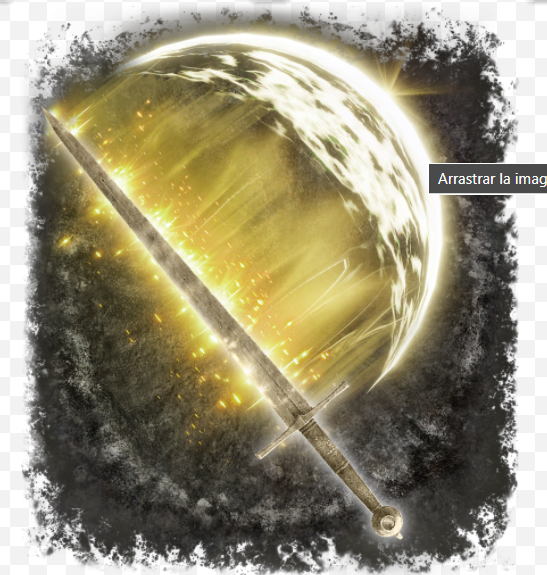
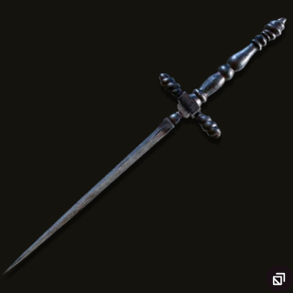
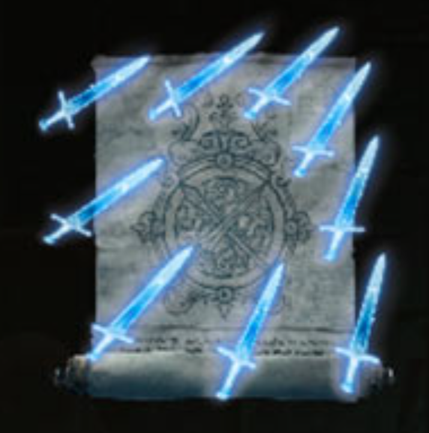

Las Mejores Builds de Elden Ring para el DLC Shadows of the Erdtree
Prepárate para adentrarte en las nuevas tierras del DLC Shadows of the Erdtree con las builds más poderosas de Elden Ring.
Esta guía te presenta tres builds optimizadas para aprovechar al máximo las mecánicas y desafíos del DLC,
cada una con un estilo de juego único que se adapta a diferentes preferencias.
Fuerza y Fe: El Guerrero Sagrado
Embárcate en una cruzada de justicia implacable con esta build de Fuerza y Fe.
Blande armas colosales imbuidas con el poder de la fe,
aplastando a tus enemigos con ataques devastadores y hechizos sagrados curativos.
Esta build es perfecta para aquellos que disfrutan de la brutalidad de la batalla cuerpo a cuerpo combinada
con la versatilidad de la magia de apoyo.

CARACTERISTICAS
Combate cuerpo a cuerpo a distancia corta con armas colosales.
Hechizos de fe para daño sagrado, curación y apoyo.
Alta defensa y vitalidad.
Destreza y Arcano: El Acólito de la Sangre
Conviértete en un maestro de la sangre con esta build de Destreza y Arcano.
Desata hemorragias devastadoras con dagas afiladas imbuidas en escarcha o veneno,
mientras que los hechizos de arcano te otorgan habilidades únicas para controlar el campo de batalla.
Esta build es ideal para jugadores ágiles que buscan un estilo de juego rápido y letal.

CARACTERISTICAS
Ataques rápidos y letales con dagas y estoques.
Hechizos de arcano para infligir hemorragia, veneno y escarcha.
Buena agilidad y evasión.
Inteligencia y Destreza: El Hechicero veloz
Domina los poderes arcanos con esta build de Inteligencia y Destreza.
Lanza hechizos arcanos devastadores a distancia mientras esquivas hábilmente los ataques enemigos con tu katana o estoque.
Esta build es perfecta para aquellos que disfrutan de un estilo de juego estratégico basado en la magia y la precisión.

Hechizos arcanos a distancia de gran alcance.
Combate cuerpo a cuerpo con katanas o estoques para ataques en espacios cerrados.
Jugadores que quieren un equilibrio entre daño mágico y físico.